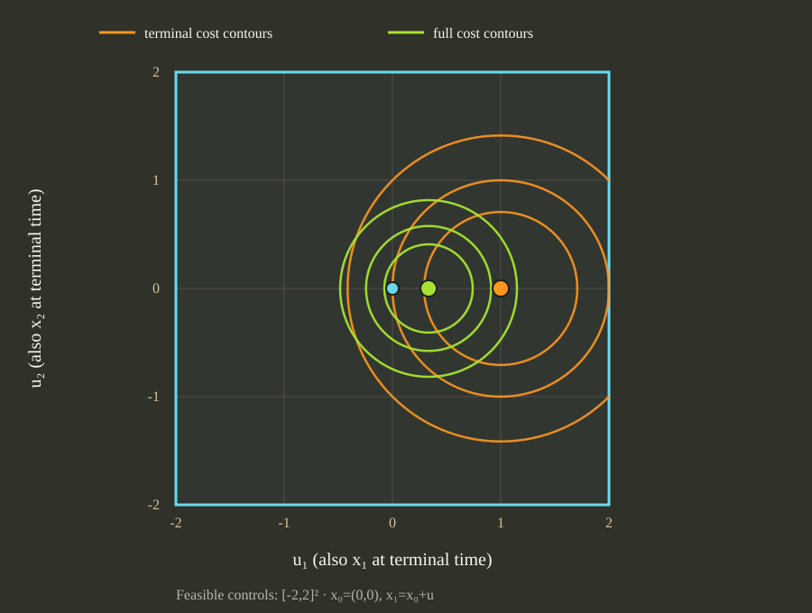

Source-bound replay · saved native QP
Current-source replay of the full-history 2D optimum
This companion reruns the saved one-step 2D witness using the merged compiler source at 536a5a9f81b49a164847d36ebef96501b0925312, which includes compiler commit 260cc9a7483f94724ab6bd4d513421be8e5ec824. The source is retained at evidence/full-history-source-536a5a9f-20261112. It checks that scale-safe coefficient construction preserves the result after the review fix.

Measured provider results
The controls are shown as column vectors. Rational values carry the mathematical result; rounded decimals are for quick reading, and the raw response files preserve the solver’s full precision.
Full source cost
Control: u₀ = [1/3; 0]
Running cost: 2/9 (≈ 0.222222)
Terminal cost: 4/9 (≈ 0.444444)
Total source cost: 2/3 (≈ 0.666667)
H residuals: equality 0; inequality 0.
Terminal only
Control: u₀ = [1; 0]
Running cost: 0
Terminal cost: 0
Total source cost: 0
H residuals: equality 0; inequality 0.
Both solves used the registered csl.convex.highs provider. The executable SHA-256 is 5ec2cf4411e1f183de4dcbf74398ae4acae2a5179d59ba5fa83b3ff651c08d62. Its Release build reused the correctly configured bridge cache with dependency tracking; this is not an independent from-scratch build.
Records and reproduction
The offline bundle preserves exact requests, responses, stderr, the corrected capture receipt, build log, CMake cache and the failed first receipt write. The receipt says the inline Python producer was not retained separately. The source capsule is not included because it contains local audit notes; the retained source ref identifies the exact source commit.
Download current-source raw evidence · Read the digest manifest · Read the original capture receipt · Build and reproduction commands
Scope
This verifies one supported two-state, two-control convex QP on a supplied feasible history relation. It does not complete the original Lotka, orbit or fuel feedback campaigns and does not establish nonlinear safety.